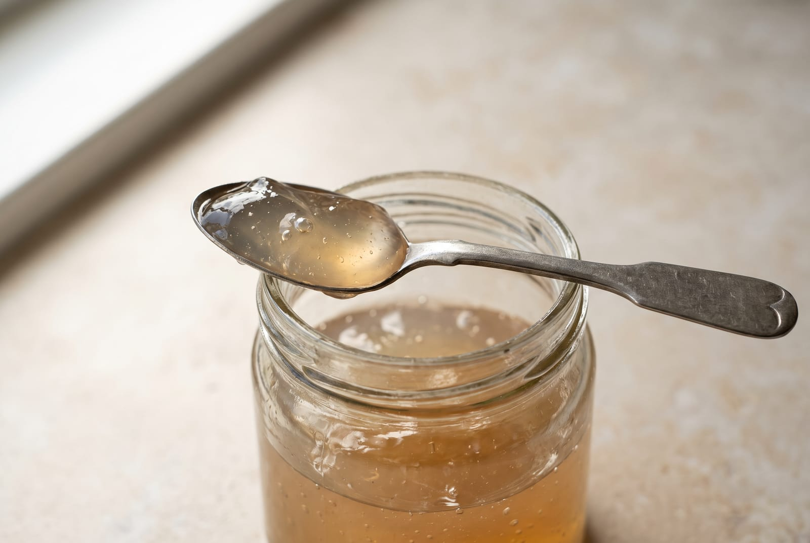

Home/The shop/Sea moss in Liverpool
The shop · Buying notes
Where to buy sea moss in Liverpool.
The short answer is that I sell it, at 599 Smithdown Road, Tuesday to Sunday. The longer answer is the one worth having: what to check on any jar in any shop, what a fair price per spoon looks like, and the jar on my own shelf you cannot work one out for.
By Reiss Davies Ausar9 September 20268 minute read

This question arrives two ways. Sometimes it is somebody in the city who wants to buy a jar today and does not want to order online. Sometimes it is somebody holding a jar they already bought, who has worked out that it is not what they thought it was and wants to know where to go next.
I am not going to write a list of other shops, because I do not know what is on their shelves this week and I would be guessing. What I can do is tell you exactly what is on mine, and give you the checks I would run on any jar anywhere, including on my own.
01The shop, and when it is open
Herbase is at 599 Smithdown Road, Liverpool L15 5AP. It opened in August 2024, after five years of sending orders out of a spare room. The phone is 07946 806533 and the email is herbase.earth@gmail.com.
Tuesday to Sunday, 10 to 6. Closed Monday. The website takes orders at any hour, but nothing leaves the building on a Monday and there is nobody on the phone either.
There are five sea moss products on the shelf: the Northern Soul gel in two sizes, the plain Chondrus Crispus gel, Purple Mwani, Nu Heru, and Seaking, which is the Northern Soul formula dried into capsules. Prices are in section four. Everything else in the shop is herbs, resin, mushrooms and books.


Nineteen people have left a Google review of the shop and the average sits at 4.8. That is nineteen reviews of a shop, not of a jar, and I would not read it as anything else. There are no product reviews anywhere on this site because nobody has given me any I could quote.
02What to check on any jar, in any shop
This is the list I run in my head when somebody hands me a jar across the counter. It works on mine as well, and mine does not pass all of it.
| Check | What a good label does | Why it matters |
|---|---|---|
| The species | Names the plant in Latin: Chondrus crispus, Eucheuma cottonii or Gracilaria | Sea moss and Irish moss are trade names covering several plants at several prices. |
| Wild or farmed | Says wildcrafted or pool grown, and names a coast | Wild Atlantic Chondrus and farmed warm-water Eucheuma cost very different amounts per kilo. |
| Prepared with | Lists everything in the jar, water included | A gel carrying a thickener, a preservative or a sweetener should have to say so on the front. |
| Storage | Fridge, and a number of days once opened | A gel with no preservative in it is a fresh food and behaves like one. |
| A printed date | A use-by or best-before you can actually read | A jar with no date on it is a jar nobody is counting. |
| Figures, or an honest blank | Prints a measured quantity, or says why it cannot | A count of how many minerals are in something, with no quantity for any of them, is a slogan and not a specification. |
| An address | A business address and a way to ring it | Somebody has to be answerable for what the label says. |
| Enough to price it | A volume, or a number of servings | Without one of those you cannot work out the cost per spoon, and you cannot compare it with anything. |
Mine fails the last row on two jars, and no gel I make carries an iodine figure. I will come back to both rather than leave them under a table.

03The species question, which is most of the answer
If you check one thing, check this one. Chondrus crispus is the cold Atlantic plant, picked by hand off rocks at low tide off Ireland, Scotland, Brittany and Nova Scotia. Dried, it is dark, flat and forking, and thin enough to see light through. Eucheuma cottonii is the warm-water plant, farmed on lines in shallow lagoons, thick and round in section, and it dries pale gold. Gracilaria is warm-water and farmed as well, and turns up under the name Jamaican moss.

None of that makes one plant good and another bad. It makes them different plants at different costs, and the problem is only ever the label. A jar of farmed Eucheuma sold as Irish moss at the price of wild Chondrus is the thing to watch for. I have written the long version of how to tell them apart in the piece on the two species.
On my own shelf: Northern Soul and Chondrus Crispus are the cold-water plant. Purple Mwani is Eucheuma cottonii from Tanzania, named as itself and priced at £24.99 rather than dressed up as the other one. Nu Heru is the cold-water plant again, with hibiscus, elderberry and baobab named on the listing.

04What a fair price looks like
Compare jars by the spoon, not by the jar. A tablespoon a morning is the serving on every gel I sell, so the sum is the price divided by the number of tablespoons in it. Here is mine, worked out in public.
| What it is | Price | Per morning |
|---|---|---|
| Northern Soul gel, 500 ml | £50.00 | About 33 tablespoons, so about £1.52. |
| Northern Soul gel, 300 ml | £34.99 | About 20 tablespoons, so about £1.75. |
| Nu Heru gel, 300 ml and 500 ml | £34.99 and £50.00 | The same two sizes, so the same arithmetic at one spoon. The listing allows one or two. |
| Chondrus Crispus gel | £34.99 | The listing prints one size and no volume, so there is no honest figure here. This is my label failing my own check. |
| Purple Mwani gel | £24.99 | No volume printed either, but the listing gives 20 days at one tablespoon, so about £1.25. |
| Seaking capsules | £39.99 | 50 capsules at 800 mg, two a morning, 25 days. £1.60 a day. |
So a cold-water gel from me lands between about £1.52 and £1.75 a morning, and the warm-water one at about £1.25. If you are comparing a jar somewhere else, get it onto that footing before you decide anything. A £20 jar with ten spoons in it is dearer than a £50 jar with thirty-three.
The other half of a fair price is what is in the jar. A gel of one wild-picked Atlantic species, prepared with water and nothing else, is a different cost base from a farmed warm-water gel thickened up with its own carrageenan. Cheap is not automatically wrong. Cheap and calling itself Irish moss usually is.
05Buying it from us without coming in
Orders go through the website at any hour. They are packed and dispatched from the same building on Smithdown Road, and UK delivery is free over £50.
Gels go out chilled, Tuesday to Sunday, which is another way of saying that nothing leaves here on a Monday. Capsules and resin are not chilled and are not fussy about it. If you want a gel to land on a particular day, ring first and we will work backwards from it.

Whatever the parcel is, the first thing to do with a gel is put it in the fridge and use a clean, dry spoon from then on. It keeps 28 days once opened, or freeze part of it on the day it arrives if you know you will not finish it. Frozen gel thaws overnight in the fridge and is fine afterwards.
If you are ordering for the first time and you are not sure which of the five you want, ring 07946 806533 in shop hours and ask. It is a two minute call and it saves a return.
06What I am not going to tell you about the gel
You will have read a great deal about what sea moss does. None of it is going to come from me, and it is worth saying why in a piece about buying it.
I sell a food. The only printed figure on anything on my shelf is the iodine in Seaking, 75 µg in a capsule and 150 µg in the two you take, against a reference intake of 150 µg a day for an adult. Every gel I make prints no iodine figure at all, because the amount in a spoonful moves from harvest to harvest and I will not print a number I cannot stand behind for the jar in your hand. That is set out on the page about the figure and in the iodine row of every specification sheet.
The listings this site replaced carried a page of statements about what the gel does to a body. I took them off. What a spoonful does or does not do is not something a seller can promise.
A shop that will tell you what a jar does is a shop that has stopped telling you what is in it.
So the specification is what you get: species, part, preparation, size, serving, storage, and a plain blank where a figure should be but is not.
07If you are coming in
Bring the jar you already bought. Half the useful conversations at that counter start with somebody putting one down on it, and reading a label together takes a minute. If the answer is that you bought a decent jar of farmed Eucheuma at a fair price, that is the answer and you have not wasted anything.
Ask about the cautions before you buy rather than after. Sea moss and kelp both carry iodine, so the standard guidance applies: not for anyone with an overactive thyroid, ask your GP or pharmacist first if you take thyroid medication, ask your midwife or GP if you are pregnant or breastfeeding, and not for children. There is a fuller list on the bladderwrack piece and on every specification sheet.
If a question needs an hour rather than a counter, there is a consultation at £120. It covers ingredients, sourcing and how to take things. It is not a diagnosis and it is not a substitute for advice from your GP or pharmacist, and I would rather say that here than have you find it out in the room.
The sea moss shelf
Four of the five, with the prices above. Nu Heru is on the shelf too, at the same sizes as Northern Soul.

Northern Soul
from £34.99The everyday gel. Cold-water Chondrus crispus with four algae from three families, prepared with water. 300 ml at £34.99, 500 ml at £50.00.
Choose a size
Chondrus Crispus
£34.99The plain one. A single species, water, and a drop of Omega DHA oil. One jar, one size, and no volume printed on the listing.
Add to bag
Purple Mwani
£24.99The warm-water species, sold as itself. Eucheuma cottonii from Tanzania. 20 days at one tablespoon, so about £1.25 a morning.
Add to bag
Seaking
£39.99The counted one. 50 vegan capsules at 800 mg, 75 µg of iodine in each. For travelling, or when the figure is the point.
See the specification599 Smithdown Road, Tuesday to Sunday, 10 to 6. If the door is shut it is Monday, and the phone will be back on tomorrow.

Reiss Davies Ausar
Founder and formulator at Herbase. Trading online since 2019 and behind the counter at 599 Smithdown Road, Liverpool, since August 2024. Author of three books on herbal practice. Book an hour with him if you want to go into more detail.